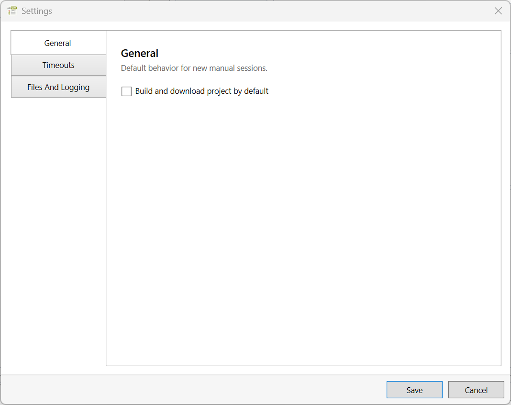
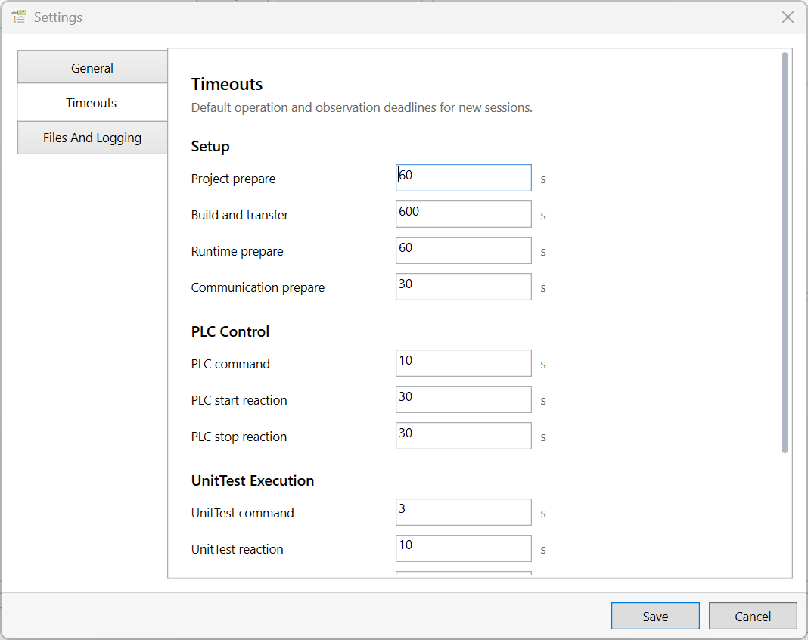
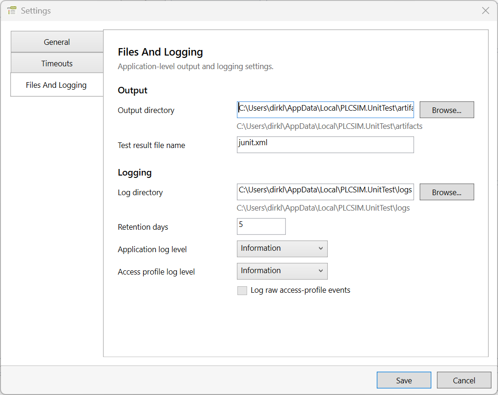

Open Tools > Settings... to configure application-level defaults and file/logging policy. Settings initialize new sessions; they do not replace the selected profile's configuration or the current session choices.
General

General contains defaults that influence new manual sessions.
Setting
Description
Build and download project by default
Initializes the Step 1 project-handling choice for new manual sessions and imported drafts. The checkbox remains editable. Load UnitTest always uses application-managed project handling.
Timeouts
Values are entered in seconds and define application-owned overall operation or observation boundaries. Imported configuration and current-session overrides take precedence where supported.

Timeout defaults are grouped by the operation or observation they bound.
Setup
Setting
Description
Project prepare
Limits opening or refreshing the selected project and preparing its target context.
Build and transfer
Limits the combined project build and download operation.
Runtime prepare
Limits preparation of the selected or newly created runtime target.
Communication prepare
Limits establishment of UnitTest communication after the PLC becomes usable.
PLC control
Setting
Description
PLC command
Limits the API call used to submit a PLC start or stop command.
PLC start reaction
Limits monitoring for an observed PLC state compatible with a successful start request.
PLC stop reaction
Limits monitoring for an observed PLC state compatible with a successful stop request.
UnitTest execution
Setting
Description
UnitTest command
Limits submission of a Start, Abort, or Reset command to the PLC-side UnitTest application.
UnitTest reaction
Limits monitoring for evidence that the PLC-side application reacted to the submitted command.
Test run
Limits observation of an active RunControl epoch until completion.
Final event evidence
Limits the final wait for result and aggregation events after completion has been observed.
Recovery
Setting
Description
Communication revalidation
Limits how long stale UnitTest communication may recover before it becomes invalid. A value of zero disables this terminal timeout.
Files and logging

Files and Logging controls result artifacts and diagnostic logs.
Output
Setting
Description
Output directory
Defines the base directory for generated test-result artifacts. The default is %LOCALAPPDATA%\PLCSIM.UnitTest\artifacts. The resolved path is shown below the editor.
Test result file name
Defines the file name used for the generated JUnit XML artifact.
Logging
Setting
Description
Log directory
Defines the directory containing application, access-profile, and worker logs. The resolved path is shown below the editor.
Retention days
Defines how long eligible log files are retained.
Application log level
Controls diagnostic detail emitted by the WPF application and shared application services.
Access profile log level
Controls diagnostic detail emitted by access profiles. Their internal workers inherit this level unless another host explicitly overrides it.
Log raw access-profile events
Adds raw event evidence for focused troubleshooting. The option is available only when the access-profile log level is Debug.
Restart boundary. Logging-path and logging-policy changes apply on the next application start. Commands opening the current log continue to target the active startup log.